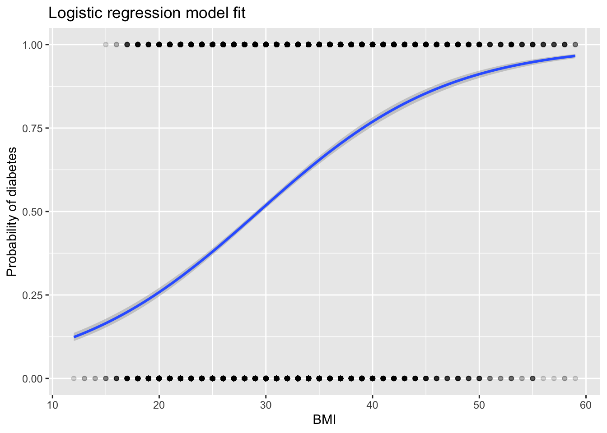

library(tidyverse)## ── Attaching packages ─────────────────────────────────────── tidyverse 1.3.2 ──
## ✔ ggplot2 3.4.0 ✔ purrr 0.3.5
## ✔ tibble 3.1.8 ✔ dplyr 1.0.10
## ✔ tidyr 1.2.1 ✔ stringr 1.4.1
## ✔ readr 2.1.3 ✔ forcats 0.5.2
## ── Conflicts ────────────────────────────────────────── tidyverse_conflicts() ──
## ✖ dplyr::filter() masks stats::filter()
## ✖ dplyr::lag() masks stats::lag()library(corrplot)## corrplot 0.92 loadedlibrary(caret)## Loading required package: lattice
##
## Attaching package: 'caret'
##
## The following object is masked from 'package:purrr':
##
## liftdf <- read.csv("diabetes_5050.csv", sep = ",", header = TRUE)df |>
ggplot() +
geom_histogram(aes(x = BMI, y = ..density..)) +
labs(x = "BMI", title = "Distribution of BMI among participants") +
stat_function(fun = dnorm, args = list(mean = mean(df$BMI), sd = sd(df$BMI)), lwd = 1, col = "blue")## Warning: Using `size` aesthetic for lines was deprecated in ggplot2 3.4.0.
## ℹ Please use `linewidth` instead.## Warning: The dot-dot notation (`..density..`) was deprecated in ggplot2 3.4.0.
## ℹ Please use `after_stat(density)` instead.## `stat_bin()` using `bins = 30`. Pick better value with `binwidth`.df_cor = cor(df[, c(2:22)], method = "pearson")
corrplot(df_cor, method = "circle", type = "lower", tl.col = "black", tl.srt = 45)# removing variables that appears collinear with other variables
df <- df |> filter(BMI < 60) |> dplyr::select(-c(MentHlth, PhysHlth, DiffWalk, Education, Income, HighBP))Splitting the data
y <- df$Diabetes_binary
test_index <- createDataPartition(y, times = 1, p = 0.2, list = FALSE)
test_set <- df[test_index,]
train_set <- df[-test_index,]fit_glm <- glm(Diabetes_binary ~ ., data = train_set, family = "binomial")
p_hat_glm <- predict(fit_glm, test_set, type="response")
y_hat_glm <- factor(ifelse(p_hat_glm > 0.5, 1, 0))
confusionMatrix(y_hat_glm, as.factor(test_set$Diabetes_binary))$overall["Accuracy"]## Accuracy
## 0.7405014ggplot(aes(x = BMI, y = Diabetes_binary), data = test_set) +
geom_point(alpha = .15) +
geom_smooth(method = "glm", method.args = list(family = "binomial")) +
ggtitle("Logistic regression model fit") +
xlab("BMI") +
ylab("Probability of diabetes")## `geom_smooth()` using formula = 'y ~ x'
summary(fit_glm)##
## Call:
## glm(formula = Diabetes_binary ~ ., family = "binomial", data = train_set)
##
## Deviance Residuals:
## Min 1Q Median 3Q Max
## -3.1211 -0.8377 -0.1512 0.8689 2.9768
##
## Coefficients:
## Estimate Std. Error z value Pr(>|z|)
## (Intercept) -8.037076 0.127384 -63.093 < 2e-16 ***
## HighChol 0.684555 0.020610 33.215 < 2e-16 ***
## CholCheck 1.424819 0.089318 15.952 < 2e-16 ***
## BMI 0.095620 0.001790 53.406 < 2e-16 ***
## Smoker 0.008120 0.020762 0.391 0.69573
## Stroke 0.255910 0.045534 5.620 1.91e-08 ***
## HeartDiseaseorAttack 0.334740 0.031593 10.595 < 2e-16 ***
## PhysActivity -0.061118 0.023258 -2.628 0.00859 **
## Fruits -0.050489 0.021690 -2.328 0.01993 *
## Veggies -0.108443 0.025679 -4.223 2.41e-05 ***
## HvyAlcoholConsump -0.748977 0.054607 -13.716 < 2e-16 ***
## AnyHealthcare -0.081283 0.051482 -1.579 0.11436
## NoDocbcCost 0.071376 0.037279 1.915 0.05554 .
## GenHlth 0.632853 0.010910 58.005 < 2e-16 ***
## Sex 0.231309 0.020710 11.169 < 2e-16 ***
## Age 0.198595 0.004171 47.618 < 2e-16 ***
## ---
## Signif. codes: 0 '***' 0.001 '**' 0.01 '*' 0.05 '.' 0.1 ' ' 1
##
## (Dispersion parameter for binomial family taken to be 1)
##
## Null deviance: 78078 on 56321 degrees of freedom
## Residual deviance: 58632 on 56306 degrees of freedom
## AIC: 58664
##
## Number of Fisher Scoring iterations: 5control <- trainControl(method = "cv", number = 10, p = .9)
train_rpart <- train(as.factor(Diabetes_binary) ~ .,
method = "rpart",
tuneGrid = data.frame(cp = seq(0.0, 0.1, len = 25)),
data = train_set, trControl = control)
plot(train_rpart)y_hat <- predict(train_rpart, test_set)
confusionMatrix(y_hat, as.factor(test_set$Diabetes_binary))$overall["Accuracy"]## Accuracy
## 0.7142959plot(train_rpart$finalModel, margin = 0.01)
text(train_rpart$finalModel, cex = 0.75)